SweepMyTV settings, explained
From Home, open the gear icon and select Sweep TV settings. The numbered marks match the captions below. Open any screenshot to view it full size.
Screens come from Redmi development builds. Options vary by SweepMyTV version, installed apps, and TV firmware.
Quick Settings
Home → gear icon
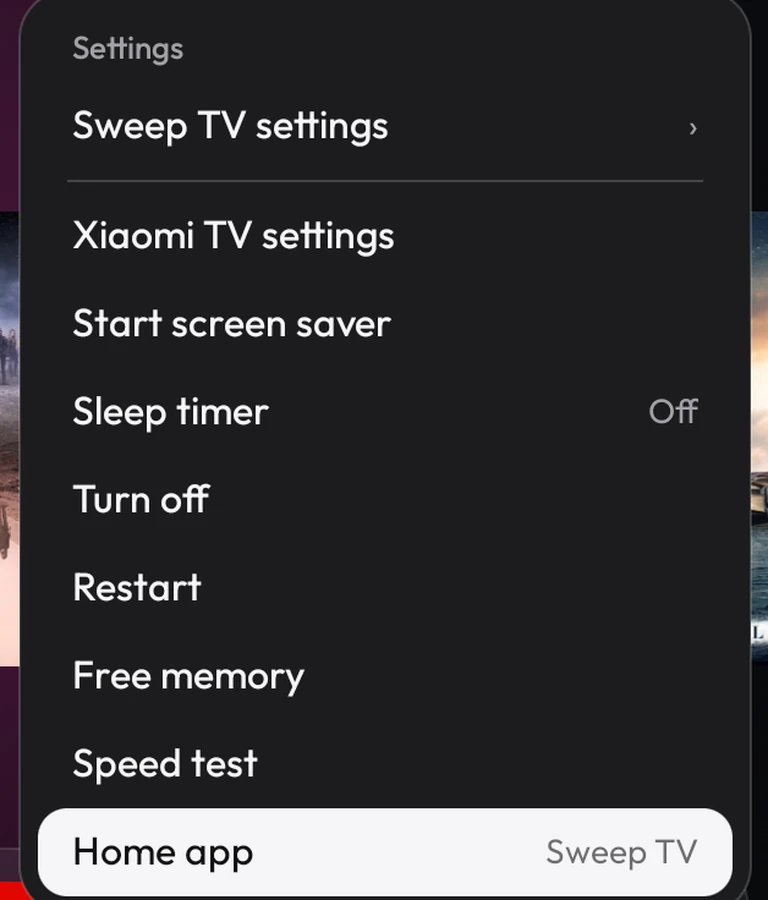
(open full size in a new tab)- Sweep TV settings
- Start screen saver
- Power and restart
- Home app
- Sweep TV settings
- Opens the full settings panel. The categories are on the left. Press Right to move into the selected category and Back to return.
- TV settings
- Opens your TV maker’s settings when available. Use it for system display, sound, Bluetooth, and device updates.
- Start screen saver
- Previews the currently active screen saver on TVs that expose a start action.
- Sleep timer
- Cycles through the available delays. Turn off and Restart depend on the TV’s supported power controls and the Home helper where required.
- Free memory
- Attempts to free background memory. Use it only as needed because apps may have to reload afterward.
- Speed test
- Runs a network test from the TV. The result describes its connection at the time of the test.
- Home app
- Opens the same chooser as System → Home app. See Home app and permissions.
Appearance
Sweep TV settings → Appearance
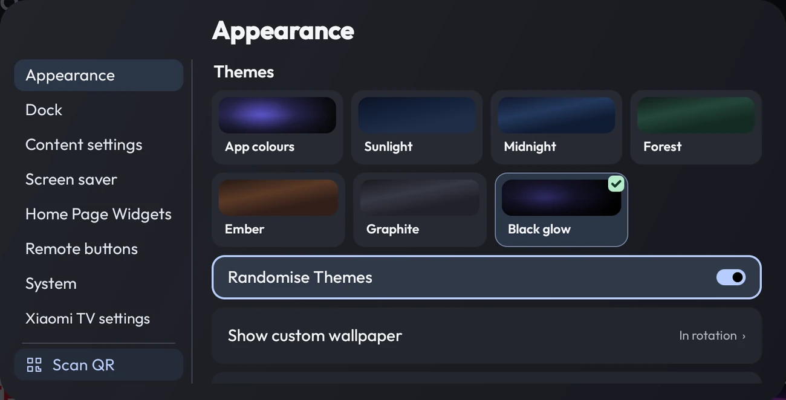
(open full size in a new tab)- Themes
- Randomise Themes
- Custom wallpaper
- Themes
- Move across the cards to preview them. Press OK to select. A checkmark identifies the active theme. Sunlight follows the time of day. App colours uses artwork and app colours. Midnight is navy, Forest is green, Ember is warm copper, Graphite is charcoal, and Black glow is near-black with colour around the selected content.
- Randomise Themes
- Rotates themes on an hourly schedule. Wallpaper can join the rotation when a picture is available. Choosing a theme manually stops the rotation.
- Show custom wallpaper
- Open the wallpaper controls. Choose a picture or folder from the TV, including supported USB storage, or use Picture of the day. A folder enables Wallpaper rotation, where you can choose ordered or shuffled playback and how often pictures change. Remove your picture or folder to clear it.
- Picture and display settings
- Opens the TV maker’s own picture or display menu when the firmware exposes a shortcut. Picture modes, brightness, and contrast are managed there.
Dock
Sweep TV settings → Dock
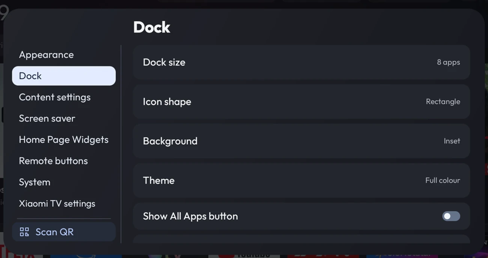
(open full size in a new tab)- Dock size
- Icon shape
- Background
- Theme
- All Apps button
- Dock size and icon shape
- Use Left or Right on the row to cycle the count or choose Rectangle, Square, or Circle. The size changes how the available space is distributed.
- Background
- Choose Tinted, Soft, Off, Frosted white, Rotate, Inset, or Outline where offered. Off removes the dock’s background surface. Rotate changes its style over time.
- Theme
- Switch between Full colour and Grayscale.
- Show All Apps button
- Adds or removes the shortcut at the end of the dock. The double-press Home shortcut is under Remote buttons.
- Edit Dock apps
- Press OK on an app tile to add or remove it. A tick means it is in the dock. Use the extra pages if your list is longer. Hold OK on an app already in the dock for the dock style shortcuts, Remove from dock, and supported App info. Removing a tile leaves the app installed.
 (open full size in a new tab)
(open full size in a new tab)
- Current dock count
- Checked apps are in the dock
- Unchecked apps can be added
Content settings
Sweep TV settings → Content settings
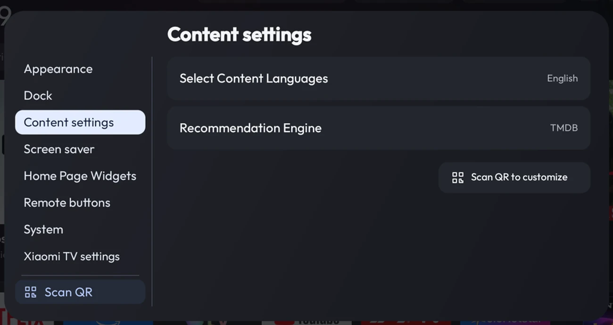
(open full size in a new tab)- Select Content Languages
- Recommendation Engine, when available
- Select Content Languages
- Select one or more original languages to filter discovery across Home. Choose All languages to clear the restriction. Language filters do not affect Continue Watching.
- Recommendation Engine
- Shown on comparison builds. Sweep TV uses the SweepMyTV catalog when configured. Comparison builds may also offer StreamRadar and TMDB. Choosing TMDB reveals the key entry and a phone QR shortcut. Keep your key private. The catalog and available source choices depend on the build.
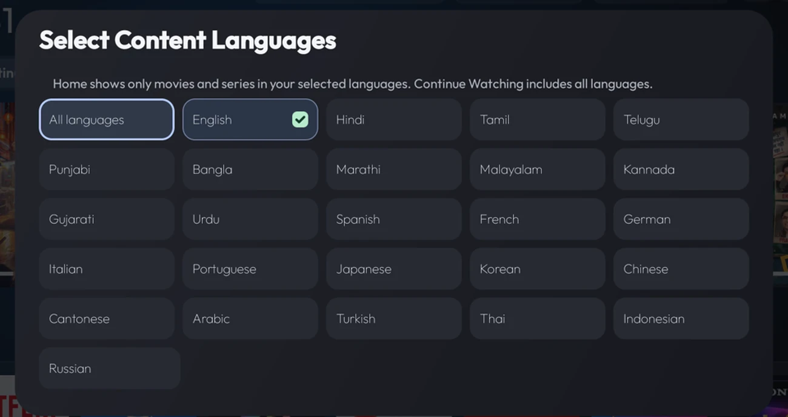
(open full size in a new tab)- All languages
- Checkmark on a selected language
Home Page Widgets
Sweep TV settings → Home Page Widgets
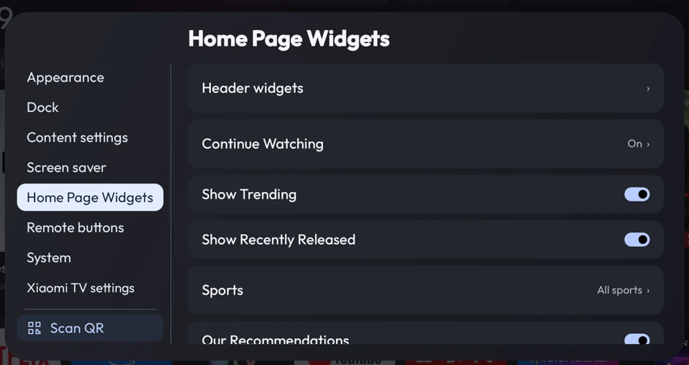
(open full size in a new tab)- Header widgets
- Continue Watching
- Trending and Recently Released tabs
- Sports
- Header widgets
- Opens the controls for the area beside the clock. See Header widgets.
- Continue Watching
- Use Show Continue Watching to reveal or hide the tab. With it on, select which supported streaming apps to include. A tick marks included apps. The entries depend on the apps and Android permissions, so a selected app may share no titles.
- Show Trending and Show Recently Released
- Each switch controls a tab at the top of Home.
- Our Recommendations and New releases row
- Control the shelves farther down Home. The New releases row can be visible even when the top Recently Released tab is hidden. RT Popular Picks appears when that feed is configured.
- Sports
- Enable Formula 1, cricket, or both with All sports. The available cards depend on current schedule and results data.
- App sections
- Show, hide, and reorder the shelves associated with installed apps. Availability and ordering choices can vary by build.
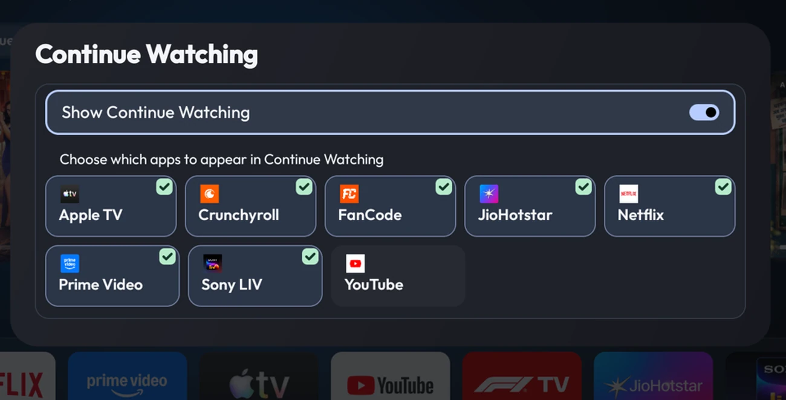
(open full size in a new tab)- Show Continue Watching
- Checked apps are included
- An unchecked app is excluded
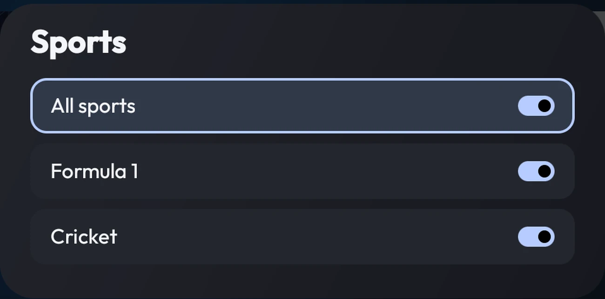
(open full size in a new tab)- All sports
- Formula 1
- Cricket
Header widgets
Home Page Widgets → Header widgets
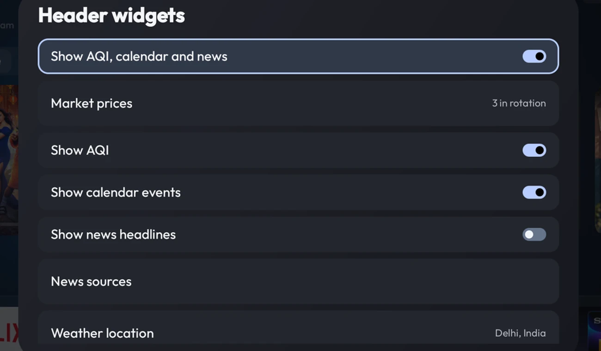
(open full size in a new tab)- Master switch for AQI, calendar, and news
- Market prices
- Individual AQI, calendar, and news switches
- News sources
- Show AQI, calendar and news
- Controls the rotating local information area. Its individual switches let you include AQI, calendar events, or news headlines.
- AQI and calendar
- Use the configured weather location. Delhi can use government station data when available. Other places can receive a model estimate. Calendar events depend on location and available data.
- News headlines and sources
- Enable the headline widget, then pick the sources offered by your build.
- Market prices
- Press OK on an asset to add or remove it from rotation. Hold OK on a priced asset to select USD or INR where offered. Indices display points.
- RAM, Storage (GB), and Uptime
- Choose which device metrics take space in the header. Each can be shown or hidden independently.
- Show greeting
- Displays or hides the greeting beside the clock. Weather location also appears here as a shortcut to the same location setting in System.
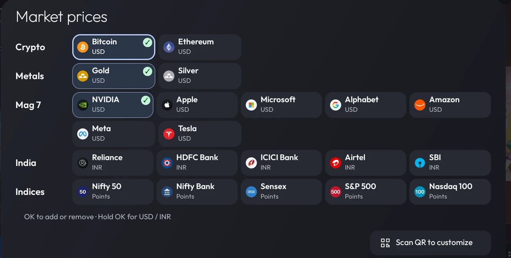
(open full size in a new tab)- Selected asset
- More assets to choose
- Hold OK for currency
Screen saver
Sweep TV settings → Screen saver
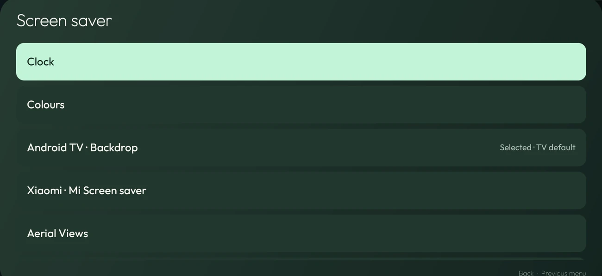
(open full size in a new tab)- Built-in Clock
- Android TV Backdrop
- Aerial Views, when installed
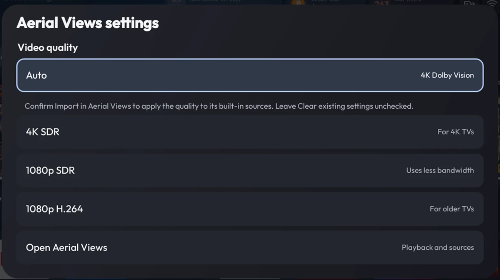
(open full size in a new tab)- Auto detects a suitable option
- 4K SDR
- 1080p options
- Open Aerial Views for sources
- Choose a screen saver
- Select from the services installed on your TV. Options may include Clock or Lock, Colours, Android TV Backdrop, a manufacturer screen saver, and Aerial Views. The tick identifies the selection.
- Get Aerial Views
- Opens its Google Play listing where available. Aerial Views is a separate app.
- Aerial Views settings
- Appears under the selected Aerial Views entry. Auto checks your display and hardware decoder and can select 4K Dolby Vision (HDR) for supported clips. 4K SDR is for compatible 4K devices. 1080p SDR uses less bandwidth, and 1080p H.264 is for older decoders. Confirm the import in Aerial Views to apply the choice.
- Open Aerial Views
- Edit its playback and source settings directly.
- Start screen saver now and Idle time
- Start a preview, or open Android’s idle time settings if your TV exposes them.
Remote buttons
Sweep TV settings → Remote buttons
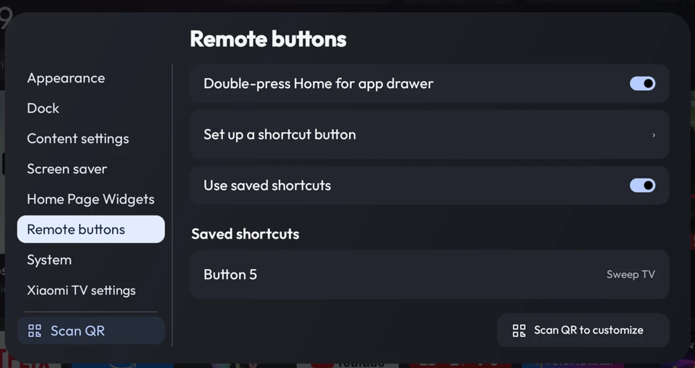
(open full size in a new tab)- Double-press Home
- Set up a shortcut button
- Use saved shortcuts
- Saved button
- Double-press Home for app drawer
- Opens the drawer from supported apps when the TV and Home helper deliver both presses.
- Set up a shortcut button
- When prompted, press a physical button your TV exposes and pick an action. Turn on the optional Home helper if the menu says it is needed.
- Use saved shortcuts
- Switches your saved mappings on or off. Select a saved entry to edit it. Available press and hold actions depend on the firmware and remote.
System
Sweep TV settings → System
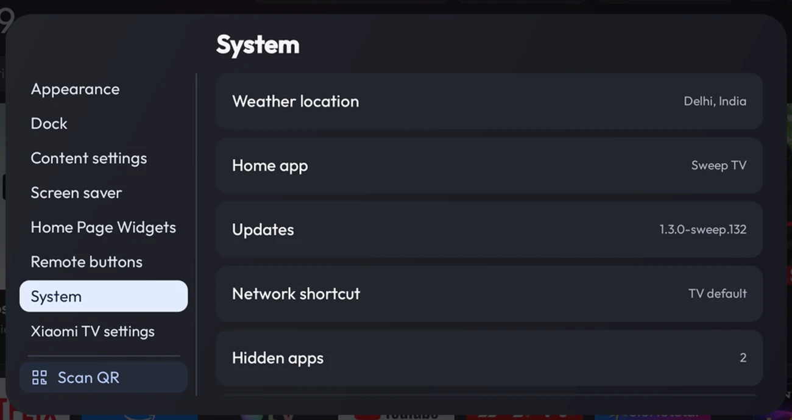
(open full size in a new tab)- Weather location
- Home app
- Updates
- Network shortcut
- Hidden apps, when present
- Weather location
- Sweep TV can estimate an approximate city. Pick a city manually if the estimate is wrong. It is used for weather, local events, and air quality.
- Home app
- Opens a list of home screens and shows how the active one is reached. See Home app and permissions.
- Updates
- Shows your installed version and checks available Sweep TV releases. An update needs the same app signing key as the installed build.
- Network shortcut
- Chooses which TV settings screen the network button on Home opens. The available destinations depend on your TV.
- Hidden apps and drawer
- Restore hidden apps if the row appears. Show other apps in drawer includes apps outside the entertainment group.
- Restore Home and power controls
- Appears if the Home helper stops responding or is unbound. Follow it to Android Accessibility if you previously chose to use the helper.
- Network debugging
- Opens Developer options. Some builds can also disable an existing debugging connection when the required access is available.
- About
- Shows release notes, included components, and open-source licenses.
Home app and permissions
System → Home app or Finish setup
 (open full size in a new tab)
(open full size in a new tab)
- Stock Android default
- Sweep TV via Home button helper
- Change Android default
- Return to original Home
- Open a Home app
- A row marked Open once previews the app. Choose Change Android default to open the system picker if your TV exposes it. Home button helper means the optional Accessibility helper routes Home.
- Return to original Home
- Follow the links to Android’s Home app preference and turn off Sweep TV’s Home helper if you enabled it. Keeping the stock launcher installed preserves that fallback.
- Finish setup
- Shows the optional setup rows you still need. Home helper handles supported Home, power, and shortcut actions. Notification access can read available playback notifications. Read TV listings lets Sweep TV access supported Watch Next data on devices that expose it.
- Restricted settings
- On supported Android versions, some sideloaded apps may need approval in Android App info before you can enable a requested service. The shortcut appears when relevant. Review only the permissions needed for the features you use.
Customize from your phone
Sweep TV settings → Scan QR or Scan QR to customize
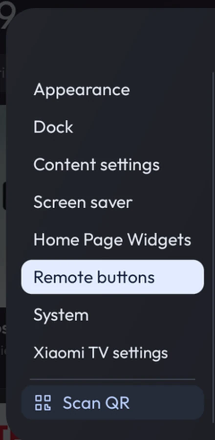
(open full size in a new tab)- Scan QR in the sidebar
- Connect
- Put the phone and TV on the same network. Select Scan QR on the TV, then point your phone’s camera at the code. Keep the TV dialog open while editing.
- Edit and save
- The phone page offers the controls available in your build. These can include Home sections, themes, wallpaper upload, and widget choices. To change a visible screen, save on the phone and check the result on the TV.
- If the page expires
- Open a new QR code on the TV. Some networks isolate devices even when they have the same Wi-Fi name. Use the remote controls if the phone cannot connect.